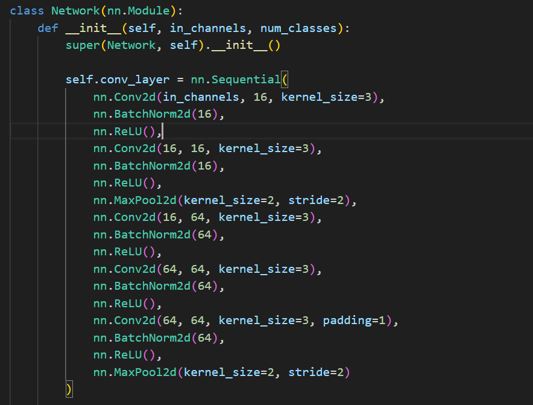
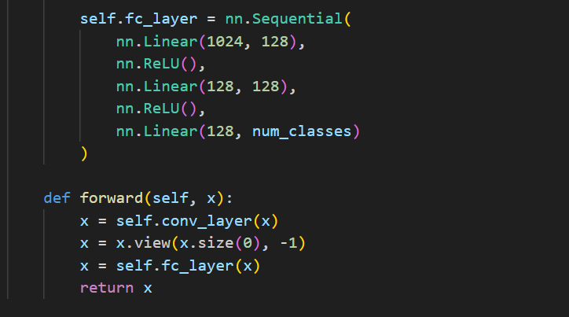
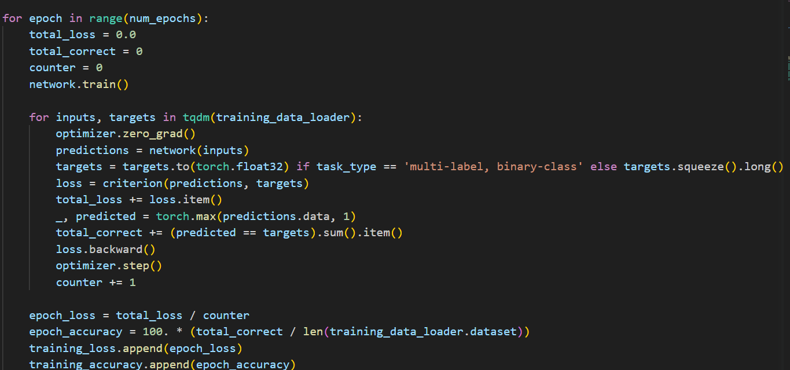
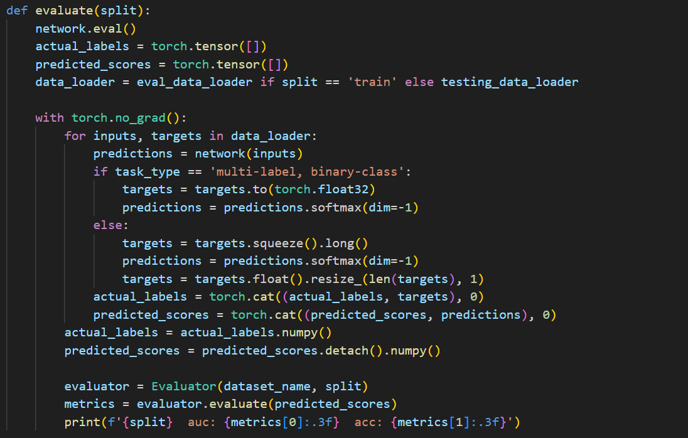
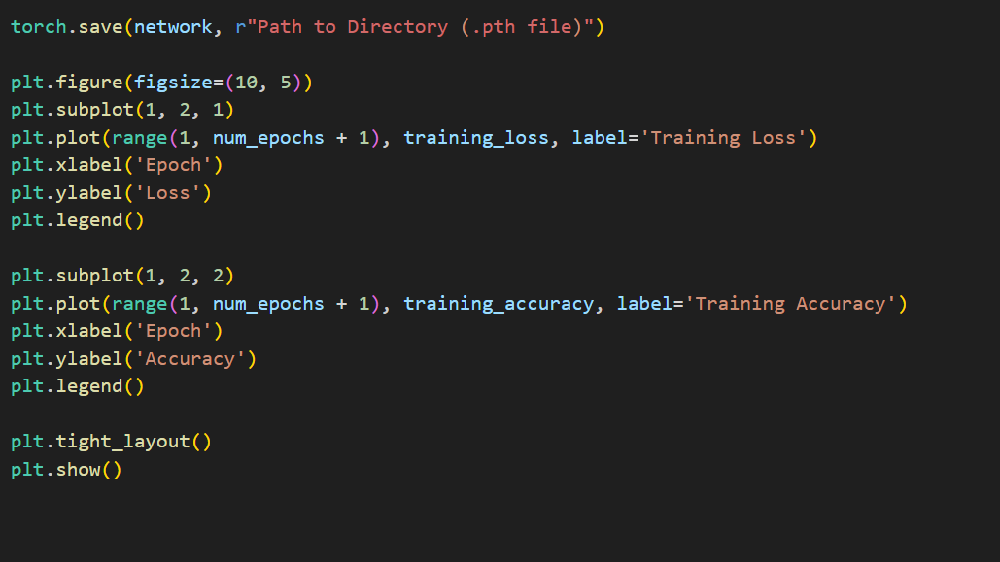

Getting Started
Link to Homepage
To attempt and recreate this project on your own we recommend that you go through these steps. We recommend that anyone attempting to recreate our project has at least a minimal background in using python.
1. Read through the prerequisites and make sure you have everything downloaded.
2. Look at the explanations given for our model script below as well as reading through this PyTorch article to familiarize yourself how PyTorch works, PyTorch Tutorial.
3. Look through our full ChatGPT Thread to better understand the format and types of questions that need to be asked to recreate this project. (PDF Download linked below)
Prerequisites:
To be able to run this python script on your own computer, you need to have a working install of Python 3.11, Link. To check if the install was complete open the terminal on your computer and run this command,
"python --version" Output: "Python 3.11.3"
Pip Install:
For our purposes we used pip to install the required libraries.
To install pip onto your computer to be able to install necessary Python libraries, open your terminal and run these commands,
"curl https://bootstrap.pypa.io/get-pip.py -o get-pip.py"
"python get-pip.py"
To verify that Pip was installed run the command "pip --version" you should get this output:
"pip 23.1.2 from (local directory)
If pip did not install correctly visit the Pip documentation page for a manual download, Link.
PyTorch Install:
To install PyTorch onto your computer to use in Python Scripts run the following command,
"pip install torch"
If PyTorch is not correctly installed visit the documentation page to correctly install the PyTorch libraries, Link.
MatPlotLib Install:
To install the MatPlotLib Library to create visual representations of the data run the following command,
"pip install MatPlotLib"
MedMNIST Install:
To install the MedMNIST library from which this data gets its datasets run the following command
"pip install medmnist"
ModelBase Explanation:
1: Importing Necessary Libraries and Modules

This code imports all the necessary libraries that are used in our program. Refer to the prerequisites to find what is needed to download prior to importing.
2. Proprocess and Dataset Loading

This code sets the data type to specify which dataset we want to use. It also outlines the number of epochs as well as the batch size for each pass. Below outlines the importing of the dataset from medmnist and preprocessing the data into a standardized format. The dataset is also split in training and testing sets.
3. Defining the Network Architecture:


This code is what defines our Convolutional Neural Network and its architecture. It includes both blocks of convolutional layers as well as the last fully connected layer. It also defines the forward pass function that will be used during training.
4. Training loop:

This code defines the training loop that is used to create the model. It completes a forward pass and then computes the loss which is backpropogated through the network. The optimizer function adjusts the weights of the model to minimize loss.
5. Evaluate:

This code defines the evaluation function which takes in the data and the loss from the training and uses those values to compute the accuracy and the final loss of the model.
6. Visual Representation:

This code uses MatPlotLib to graph the loss and accuracy outputs from training and use that to create a graph of both the loss and accuracy over each epoch.
PDF Download
- Full GPT Thread Download